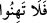
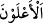
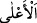
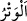
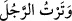
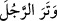
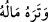
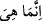

olup dünya ve âhirette onlara yardımcı olması, zillet ve zâfiyetten sakınmayı gerektiren
sebeplerin en kuvvetlilerindendir.__WORD__ (felâ tehinû) ifâdesi vehn kökündendir. Bu da zâfiyet mânâsındadır. Selm ve
silm, sulh ve barış mânâsındadır.
__WORD__ (a’levn) kelimesi __WORD__ (a’la) kelimesinin çoğuludur. Kelimenin aslı
a’leyüne’dir. Alimler kesrenin kardeşi olan ya ile zammenin bir arada olmasını hoş
görmediler. İşlem sonunda kelime a’levne oldu. Manası; galip ve üstün olanlar
demektir.
Kelbî şöyle demiştir: Kâfirler bazen size galip ve üstün gelseler de işin sonu (zafer ve
üstünlük) sizindir. Bu cümle nehiy mânâsını takrir eden ve bu işe artık son verilmesinin
vacip olduğunu te’kid eden bir hâl cümlesidir. Aynı şekilde “Allah sizinle beraberdir”
sözü de hâl cümlesidir. “O sizin amellerinizi zâyi etmeyecektir” kavlinin ifâde ettiği
gibi Allah Teala’nın, müminlerin ecirlerini tam ve eksiksiz olarak vermesi de müminler
için zillet sayılacak erken barış tekliflerinden kaçınmalarını gerektiren hususlardandır.
__WORD__ (vetr) kelimesi, zâyi etmek anlamında olup âyet “Allah Teâlâ amellerinizi zâyi
etmez” mânâsına gelir. Bu kelime Arapların__WORD__ (vetertürracüle)
sözünden alınmıştır. Kişinin evlâd, kardeş yahut samimi bir
dostunu öldürüp adamı o yakınından ayırıp tek bıraktığın zaman böyle denilir. “Tek”
mânâsında olan vitr kökündendir. Kamus’ta ifâde edildiğine göre __WORD__
(veterarracüle), kişiyi korkuttu ve ona hoş olmayan bir şey ulaştırdı demektir.
__WORD__(veterahü malehü), malını eksiltti demektir.
Amellere mukabil sevabı terk etmekten vetr diye tâbir edildi ki bu, can ve mal gibi
mutad şeyleri zâyi etmektir. Hem de Ehl-i Sünnet anlayışına göre amellerin karşılığında
sevap vermesi Allah için zorunlu değildir. Bu şekilde Allah’ın lütuf ve keremiyle
vereceği sevabı, sanki hak edişle elde edilecek bir hak suretinde tasvir etmek
hedeflenmiş ve durum bu şekilde arz edilerek Allah’ın son derece lütufkâr olduğu
ortaya konulmak istenmiştir. Yine sanki amellere sevap vermeme, büyük hakların zâyi
ve itlâfı mesabesinde sayılmıştır.
“Bunlar sizin amellerinizdir. (Onları kaydedip koruyacak,) sonunda onların
karşılığını size tastamam ödeyeceğim”[73] hadis-i kudsinin baş tarafındaki __WORD__
(innema hiye)’deki zamir, mercii olmayan müennes bir zamir olduğu için, bu gibi
zamirlere kıssa denilir. Böyle mercii olmayan müzekker zamire ise şan denilir. Yâni
“amellerinizin karşılığı yine sizin için benim katımda mahfuzdur. Sonra amellerinizin
karşılığını size eksiksiz tastamam olarak vereceğim” demektir.
Ebû Zer (r.a.)’den rivâyet edilen merfû bir hadis-i kudsîde Peygamberimiz (s.a.)
şöyle buyurmaktadır: “Allah Teâlâ buyuruyor ki; ben zulmü kendi zâtıma haram
kıldım. Ve onu kullarım arasında da haram kıldım. Artık birbirinize
zulmetmeyiniz.”[74]